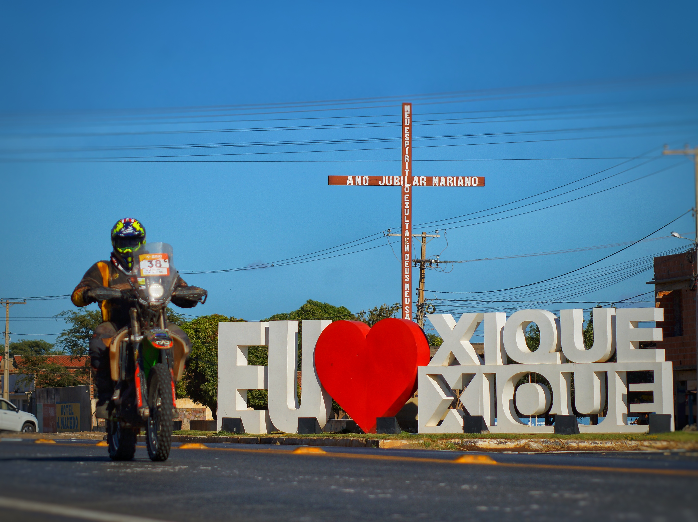
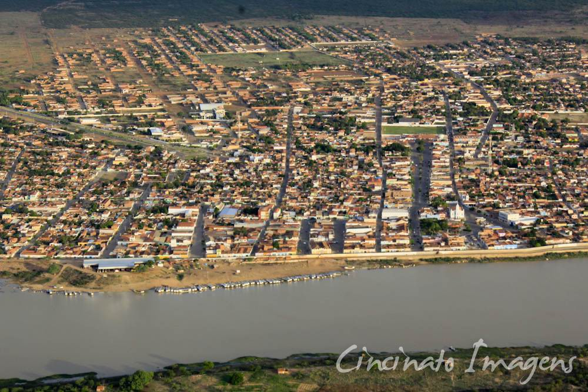
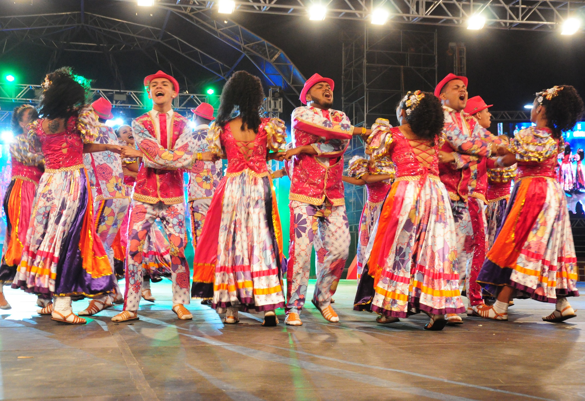
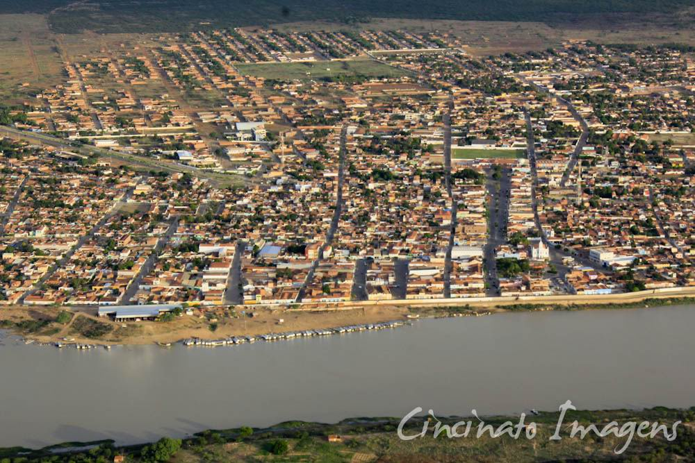
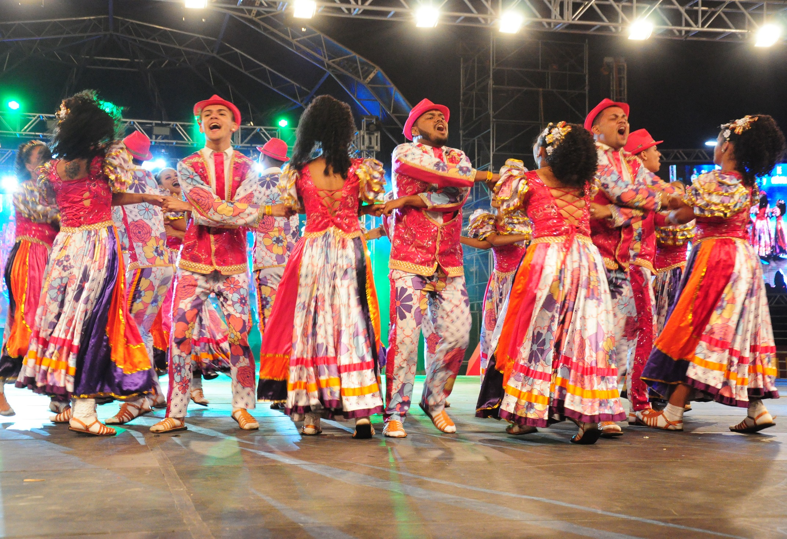
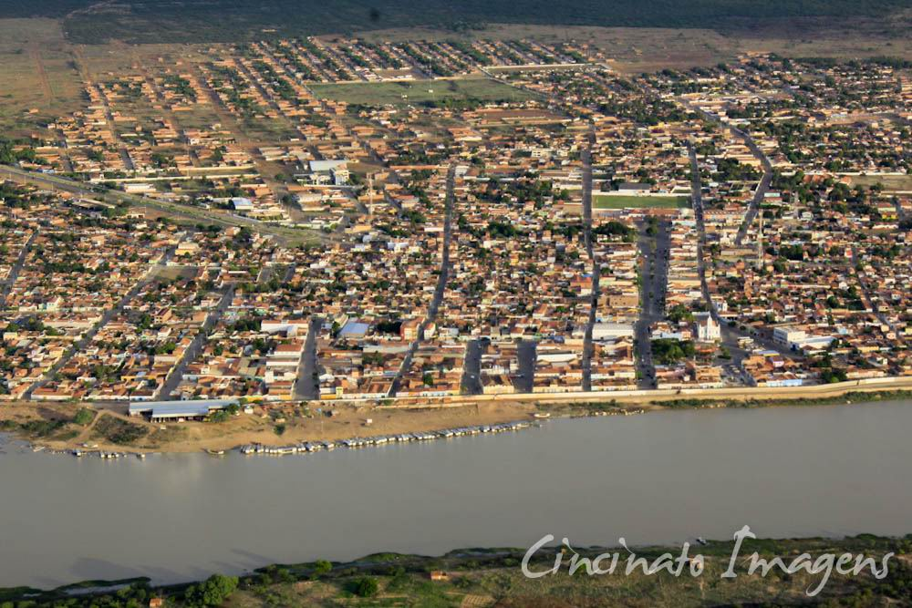
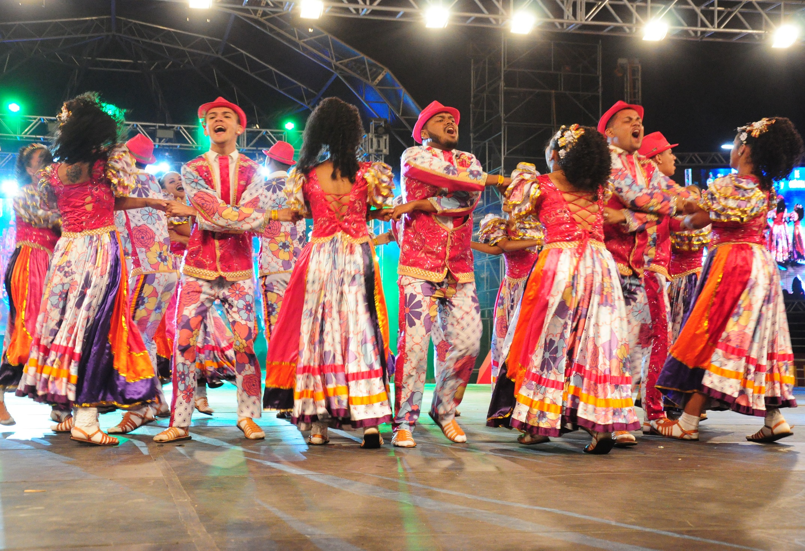

Fotos de Xique-Xique
Pontos Turísticos
História e Cultura
Fotos
Galeria de Fotos

Entrada da Cidade
Praça de Xique-Xique

Vista Geral da Cidade

Festival Cultural
 Praça de Xique-Xique

Vista Geral da Cidade

Festival Cultural
Praça de Xique-Xique

Vista Geral da Cidade

Festival Cultural